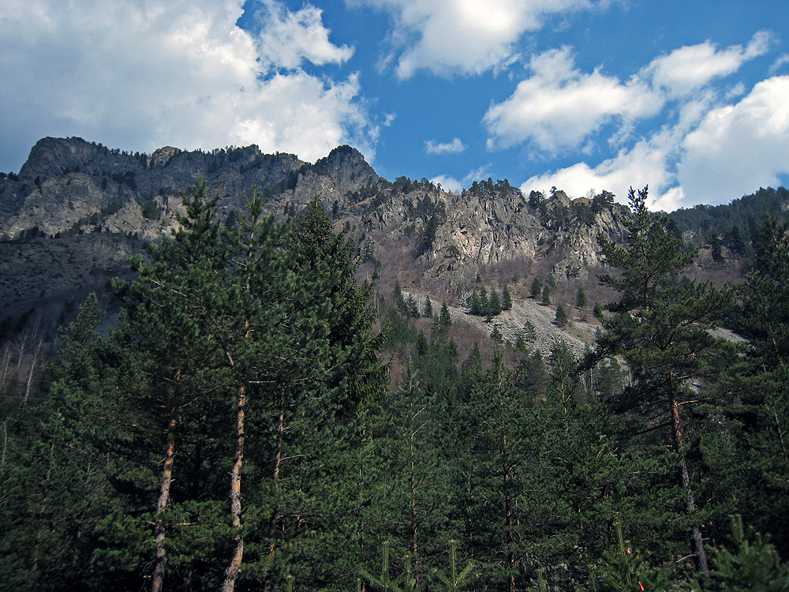

Национален парк - Рила
 „Рила“ е най-големият от трите национални парка на територията на България. Тези територии са обявени за национален парк на 24 февруари 1992 г. Паркът обхваща територия с площ над 81 000 ha в централните и най-високи части на планина Рила. Той е създаден с цел да се запазят завинаги в полза на обществото комплекси от саморегулиращи се екосистеми и присъщото им видово разнообразие, местообитания на редки и застрашени видове и съобщества, характерни и забележителни пейзажи и обекти на неживата природа, които имат световно значение за науката и културата.
От територията на парка извира една от най-дългите и пълноводни реки на Балканския полуостров – Марица. Паркът се простира между 800m и 2925m надморска височина и на неговата територия са разположени 120 естествени езера, повечето с ледников произход.
Националният парк Рила се простира между 41°53´ и 42°19´ северна географска ширина и между 23°07´ и 23°55´ източна географска дължина. На територията на парка се намира най-високият връх на Балканския полуостров – Мусала (2925 m).
На територията на парка се намират четири резервата – Парангалица, Централен Рилски резерват, Ибър и Скакавица. Национален парк Рила е една от най-големите защитени територии в Европа. Двата резервата „Парангалица“ и „Маричини езера“ са част от световната мрежа на биосферни резервати по програмата на ЮНЕСКО „Човек и биосфера“.
Предложения за хотели в Рила планина.